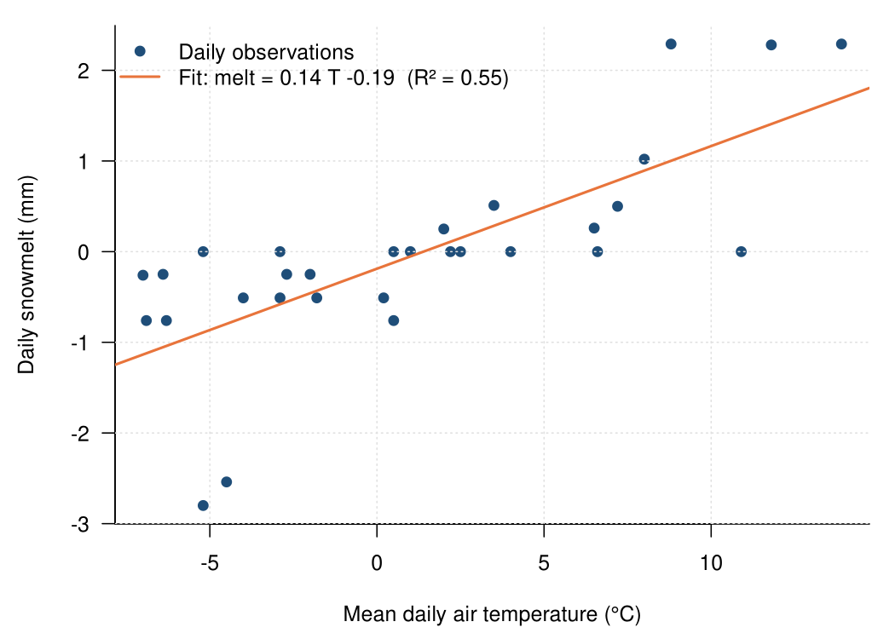
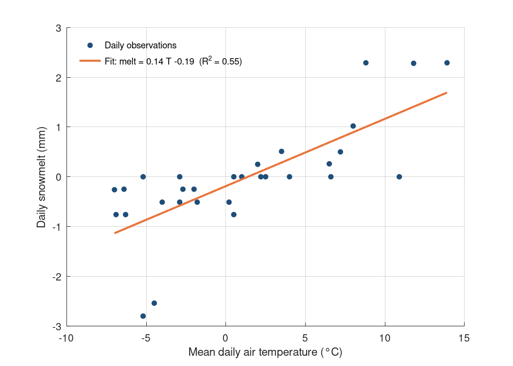

Chapter 6 · Snow and Snowmelt
Daily snowmelt vs air temperature, Bogus Basin, April 2023 (degree-day regression)
Linear regression of daily melt on mean air temperature; the slope is a degree-day factor.
Source: Chapter 6 draft; data supplied by chapter author (bogus_basin_april2023_temp_melt.csv)
Data: bogus_basin_april2023_temp_melt.csv

Code: temperature_melt_regression.py · image: figure_python.png
"""Daily snowmelt vs air temperature, Bogus Basin, April 2023 (degree-day regression)
Chapter 6 draft; data supplied by chapter author (bogus_basin_april2023_temp_melt.csv)
Run: python3 temperature_melt_regression.py -> figure_python.png"""
import numpy as np, pandas as pd, matplotlib
matplotlib.use("Agg"); import matplotlib.pyplot as plt
d = pd.read_csv("bogus_basin_april2023_temp_melt.csv")
slope, icpt = np.polyfit(d.temp_c, d.melt_mm, 1)
r2 = np.corrcoef(d.temp_c, d.melt_mm)[0, 1] ** 2
xs = np.linspace(d.temp_c.min(), d.temp_c.max(), 50)
fig, ax = plt.subplots(figsize=(7, 5))
ax.scatter(d.temp_c, d.melt_mm, color="#1f4e79", s=28, label="Daily observations")
ax.plot(xs, icpt + slope * xs, color="#e8743b", lw=2, label=f"Fit: melt = {slope:.2f} T {icpt:+.2f} (R² = {r2:.2f})")
ax.set_xlabel("Mean daily air temperature (°C)"); ax.set_ylabel("Daily snowmelt (mm)")
ax.legend(frameon=False); ax.grid(alpha=0.25)
for s in ("top", "right"): ax.spines[s].set_visible(False)
fig.tight_layout(); fig.savefig("figure_python.png", dpi=150)

Code: temperature_melt_regression.R · image: figure_r.png

# Daily snowmelt vs air temperature, Bogus Basin, April 2023 (degree-day regression)
# Chapter 6 draft; data supplied by chapter author (bogus_basin_april2023_temp_melt.csv)
# Run: Rscript temperature_melt_regression.R -> figure_r.png (base R, no packages)
d <- read.csv("bogus_basin_april2023_temp_melt.csv")
fit <- lm(melt_mm ~ temp_c, data = d)
r2 <- summary(fit)$r.squared
png("figure_r.png", width = 1050, height = 750, res = 150)
par(mar = c(4.5, 4.5, 1, 1), las = 1)
plot(d$temp_c, d$melt_mm, pch = 19, col = "#1f4e79", xlab = "Mean daily air temperature (°C)", ylab = "Daily snowmelt (mm)", bty = "l")
grid(col = "grey88")
abline(fit, col = "#e8743b", lwd = 2)
legend("topleft", bty = "n", lty = c(NA, 1), pch = c(19, NA), col = c("#1f4e79", "#e8743b"), lwd = c(NA, 2),
legend = c("Daily observations", sprintf("Fit: melt = %.2f T %+.2f (R² = %.2f)", coef(fit)[2], coef(fit)[1], r2)))
invisible(dev.off())

Code: temperature_melt_regression.m · image: figure_matlab.png

% Daily snowmelt vs air temperature, Bogus Basin, April 2023 (degree-day regression)
% Chapter 6 draft; data supplied by chapter author (bogus_basin_april2023_temp_melt.csv)
% Run: run temperature_melt_regression.m -> figure_matlab.png (MATLAB or GNU Octave)
clear; close all;
fid = fopen('bogus_basin_april2023_temp_melt.csv'); fgetl(fid);
C = textscan(fid, '%f%f', 'Delimiter', ','); fclose(fid);
T = C{1}; melt = C{2};
p = polyfit(T, melt, 1); cc = corrcoef(T, melt); r2 = cc(1,2)^2;
xs = linspace(min(T), max(T), 50);
figure('Visible', 'off', 'Position', [100 100 700 500], 'Color', 'w'); hold on;
h1 = plot(T, melt, 'o', 'MarkerFaceColor', [0.122 0.306 0.475], 'MarkerEdgeColor', [0.122 0.306 0.475], 'MarkerSize', 5, 'LineStyle', 'none');
h2 = plot(xs, polyval(p, xs), '-', 'Color', [0.91 0.455 0.231], 'LineWidth', 2);
xlabel('Mean daily air temperature (°C)'); ylabel('Daily snowmelt (mm)');
legend([h1 h2], {'Daily observations', sprintf('Fit: melt = %.2f T %+.2f (R^2 = %.2f)', p(1), p(2), r2)}, 'Location', 'northwest'); legend boxoff;
box off; grid on; set(gca, 'GridAlpha', 0.2);
print('-dpng', '-r150', 'figure_matlab.png');